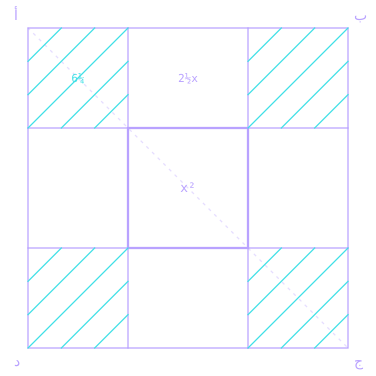

About the academyعن الأكاديمية
An AI academy in Tripoli, named after the mathematician whose name gave us the word “algorithm”.أكاديمية للذكاء الاصطناعي في طرابلس، تحمل اسم العالِم الذي اشتُقّت من اسمه كلمة «الخوارزمية».
We teach individuals and organisations in Libya to work with AI, in person and in Arabic.نعلّم الأفراد والمؤسسات في ليبيا العمل بالذكاء الاصطناعي، حضورياً وبالعربية.
The nameالاسم

Muhammad ibn Musa al-Khwarizmi, about 780 to 850 CE.محمد بن موسى الخوارزمي، نحو 780 إلى 850م.
Muhammad ibn Musa al-Khwarizmi was born around 780 and worked in Baghdad's House of Wisdom. His book on calculation gave the world algebra. The Latin form of his name gave it the word “algorithm.”وُلد محمد بن موسى الخوارزمي نحو عام 780، وعمل في بيت الحكمة في بغداد. أعطى كتابه في الحساب العالم الجبر. وأعطت الصيغة اللاتينية لاسمه كلمة «الخوارزمية».
Every model, every automation and every system in this field builds on ideas he wrote down twelve centuries ago. We carry his name so that Libya builds its own place in that field.كل نموذج، وكل أتمتة، وكل نظام في هذا المجال يقوم على أفكار كتبها قبل اثني عشر قرناً. نحمل اسمه لتبني ليبيا موقعها في هذا المجال بنفسها.
How we teachكيف ندرّس
Most of each session is lab work.معظم كل جلسة عمل في المختبر.
More than half of every session is practical. You operate AI far more than you watch it.أكثر من نصف كل جلسة تطبيق عملي. تُشغّل الذكاء الاصطناعي أكثر بكثير ممّا تشاهده.
One project runs through the whole programme.مشروع واحد يمتدّ عبر البرنامج كله.
A single project builds across every session. On the final day there is a finished piece of work to present.مشروع واحد يُبنى عبر كل الجلسات. وفي اليوم الأخير عمل مكتمل يُعرَض.
Taught in person.التدريس حضوري.
An instructor in the room and a group beside you, with no recorded videos.مدرّب حاضر ودفعة إلى جانبك، بلا مقاطع مسجّلة.
Arabic first.العربية أولاً.
Concepts in Arabic, with the English term beside them. You discuss the work in your language and read the documentation in theirs.المفاهيم بالعربية والمصطلح الإنجليزي بجانبها. تناقش عملك بلغتك وتقرأ المراجع بلغتها.
Certificates based on evidence.شهادة تقوم على الدليل.
Marking criteria are published before the programme starts. The certificate names the level you reached.تُنشَر معايير التقييم قبل بدء البرنامج. وتحدّد الشهادة المستوى الذي بلغته.
Works without the internet.يعمل من دون إنترنت.
Every lab has an offline version, so a power cut never cancels a session.لكل مختبر نسخة تعمل دون اتصال، فلا يُلغي انقطاع الكهرباء أي جلسة.
Eight minutes of talking, at most.ثماني دقائق من الشرح، حدّاً أقصى.
No one explains for longer than that before participants start working.لا يتجاوز شرح أحد ذلك قبل أن يبدأ المشاركون العمل.
The definition every participant leaves withالتعريف الذي يخرج به كل مشارك
“AI is a machine that learns patterns from examples and uses them to make a good guess. It does not think, it does not know, and it can be confidently wrong.”«الذكاء الاصطناعي آلة تتعلّم الأنماط من الأمثلة وتستخدمها لتقديم تخمين جيّد. لا تفكّر، ولا تعرف، وقد تكون مخطئة بثقة».
The academyالأكاديمية
We teach on Zawiat Dahmani Street in Tripoli, in classrooms equipped for practical labs and a seminar room for executive and policy groups.ندرّس في شارع زاوية الدهماني بطرابلس، في قاعات دراسية مجهّزة للمختبرات التطبيقية وقاعة ندوات لدفعات التنفيذيين والسياسات.
Two routes into the academy.مساران إلى الأكاديمية.
For individualsللأفراد
The Studio takes ten days and the Diploma eight months.يستغرق الاستوديو عشرة أيام، والدبلوم ثمانية أشهر.
Both are taught to in-person groups in Tripoli, and you leave with work you built.كلاهما يُدرَّس لدفعات حضورية في طرابلس، وتغادر ومعك عمل أنجزته بنفسك.
For organisationsللمؤسسات
The AI Strategy Week, Custom Training and the Policy Briefing.أسبوع استراتيجية الذكاء الاصطناعي، والتدريب المخصّص، وإحاطة السياسات.
Tell us the challenge; the first consultation is free.أخبرونا بالتحدّي؛ الاستشارة الأولى مجانية.